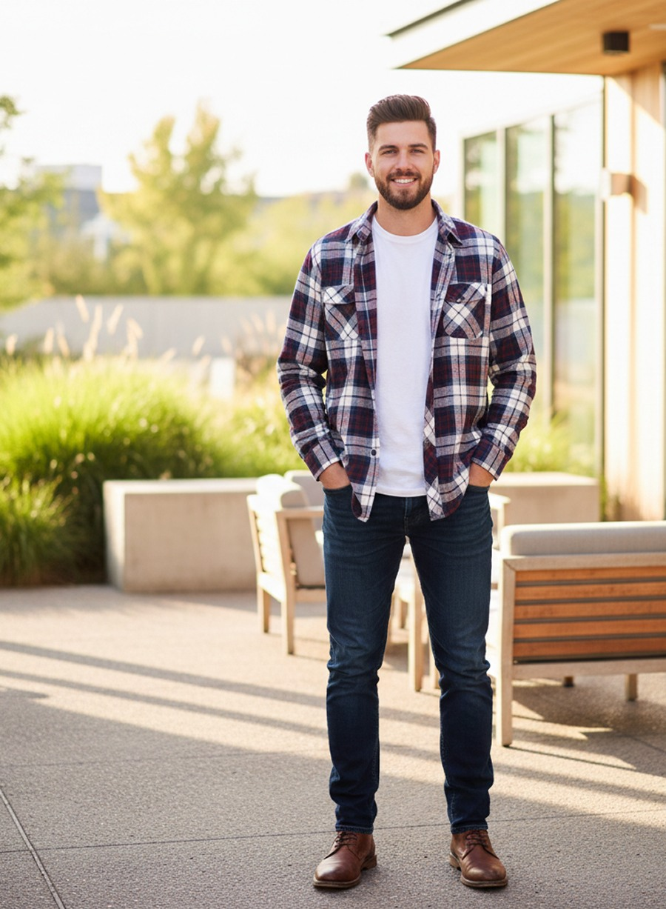
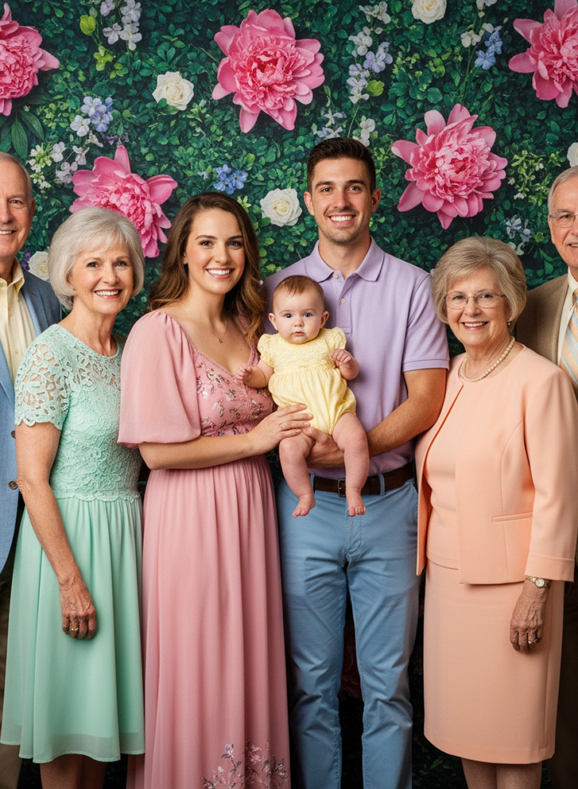
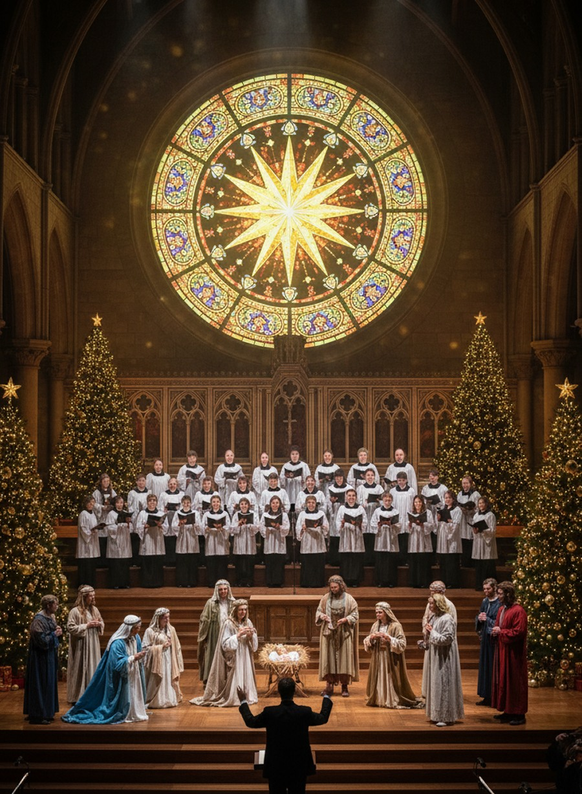
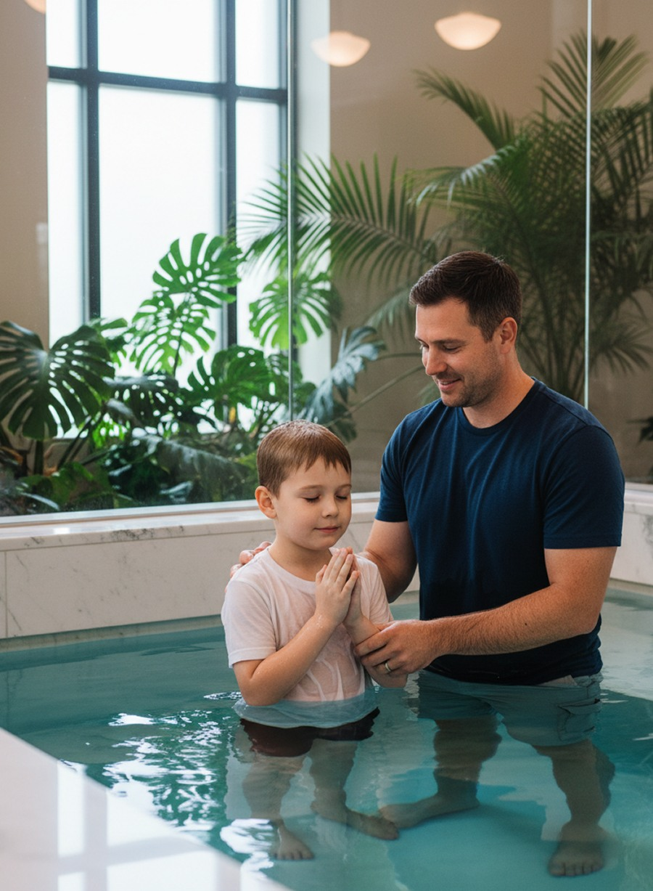

Come As You Are
You don’t have to have everything figured out before you walk through the doors. Missional Church One is a welcoming church community in Missional Church One where people build real relationships, grow in God’s Word, and experience genuine Christian fellowship as they learn to follow Jesus together.
A Multigenerational Growing Church
Missional Church One is a multigenerational Christian community where kids, students, college students, young adults, families, and senior adults worship, grow, and serve together. We believe every generation has something to give and something to learn as we follow Jesus together.
Over 150 Years in Missional Church One
For more than 150 years, Missional Church One has faithfully served this community. The people, buildings, and neighborhoods have changed, but our commitment to helping people follow Jesus has remained. From the beginning, this church has looked beyond its walls to serve others and share the hope of Jesus. That same mission continues today as a Bible-teaching church serving families across Missional Church One , Texas, and Collin County.
Our Mission
Our mission is simple: to make disciples who live and love like Jesus and help others do the same. Everything we do flows from Jesus’ call to love God, love our neighbors, and make disciples. Led by Pastor Sam Holm, Missional Church One is committed to teaching the Bible faithfully and helping people put God’s Word into practice in everyday life (Matthew 22 and 28).



